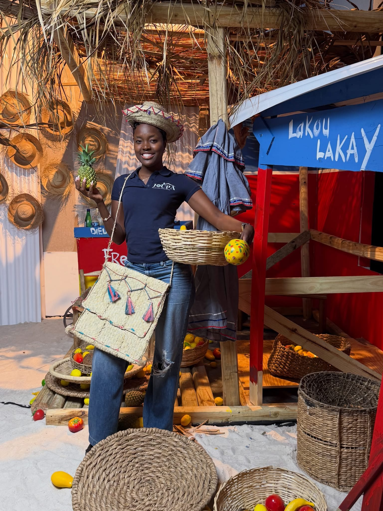

Rasin
Rasin ann Ayiti
Ayiti rete yon pati enpòtan nan idantite ak prezans piblik Suzana. Foto sa a pa la kòm dekorasyon sèlman. Li reprezante kontèks kiltirèl yon mak ki pale angle, franse ak kreyòl ayisyen epi ki konprann moun k ap antre nan yon nouvo vil oswa yon nouvo etap nan lavi.